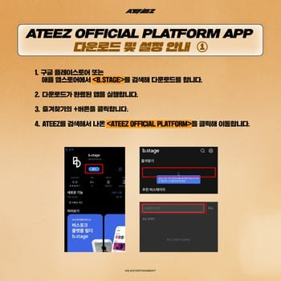
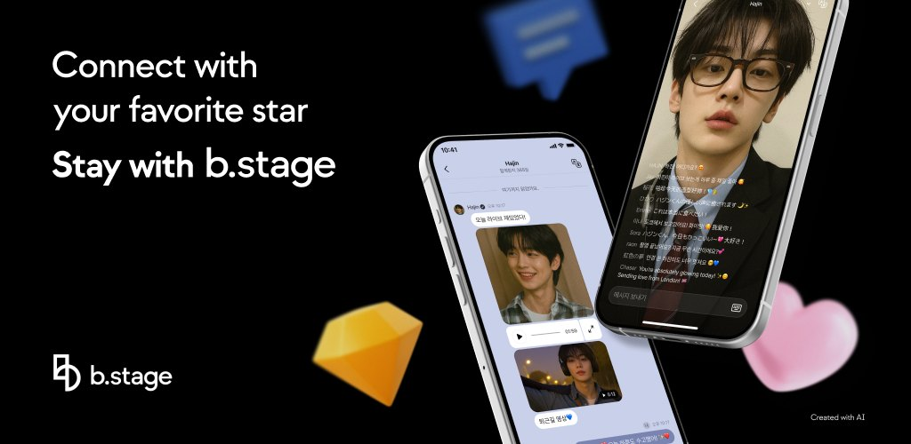

b.stage 避坑指南：追偶像平台前必须知道的五件事
装 b.stage 追偶像看着简单，实际踩过几个坑才摸出门道——会员不互通、私密平台搜不到、填错会员信息没法改，这些都是新人最容易中招的点。
第一次打开b.stage官网的时候以为就是装个 App、搜个偶像、点个关注，比刷社交软件还简单。结果折腾了大半个月才发现，它的逻辑和国内用过的粉丝应用完全不一样——会员各平台独立、私密平台搜不到、填错的入会信息删不掉，踩的坑多了才摸出门道。这篇把我踩过的几个真实坑按中招顺序列出来，先看完再动手能省不少麻烦。
坑一：搜不到偶像的 stage，不代表它不存在
症状：打开 App 右上角放大镜，输了偶像的英文、韩文名、经纪公司名，翻了三页还是没找到官方平台，甚至怀疑是不是偶像根本没开 b.stage。
原因：b.stage 的 stage 分公开和私密两种状态。处于筹备期的平台运营方会设为私密性的，要用密码才能进，这种在公开搜索结果里完全不出现。另外，搜索的检索范围只覆盖标题和详情介绍，如果运营方没把关键词填全，同名或近似名的仿冒平台反而可能排在前面。
解法：别死磕搜索框。最快的办法是去偶像的官方社媒账号（Twitter、Instagram、YouTube 频道简介）找贴出来的 b.stage 链接，或者去经纪公司的公告渠道。每个 stage 都有独立的子域网址（形如名字.bstage.in），拿到链接直接在浏览器里开也行，不装 App 也能访问和注册——只是 POP 直播和推送提醒只有 App 里才有。

坑二：会员不互通，每个 stage 都要单独付钱
症状：在 ATEEZ 的平台付了会员费，转头去 BTS 的官方 stage 发现还要再注册再付一次，以为自己之前的账号没登录或者付款没成功。
原因：这是 b.stage 最反直觉的设计。它的定位不是「一个大 App 装下所有艺人」，而是「每个艺人有自己独立的平台」——账号体系、会员关系、数字会员卡，全部挂在各自的 stage 上，互不打通。你在两个偶像平台入会，就会有两个独立的会员编号，两张数字会员卡。
解法：入会前先想清楚自己是只追一个偶像还是粉好几个。多担的话会费开支要算清楚预算；另外，会员编号是随机生成的，首次下单后长度就锁死了，这些细节在b.stage文档里写得很清楚，收集信息填错了也只能追加不能删除——下单前把字段看清再填。数字会员卡记得存图到手机相册，万一哪天 App 登不上了至少有编号可以报。

坑三：点了书签但首页没出现，别慌
症状：在偶像的 stage 页面点了「+ 加入书签」按钮，回到首页发现顶部书签区空空如也，点左上角抽屉菜单也没看到收藏列表，以为书签功能坏了或者自己没登录成功。
原因：书签的数据同步有一点点延迟，尤其是第一次登录后立刻加书签的时候。另外，b.stage 的书签功能绑定登录态，未登录时按钮会先跳注册登录流程，完成后自动回到 stage，但书签列表可能需要刷新才显示。
解法：先下拉刷新首页试试，不行就彻底关掉 App 重新打开。确认自己已经登录了（左上角抽屉菜单顶部有头像），未登录状态下加书签是不会生效的。还有一个容易忽略的点：想取消收藏不是去设置里删，而是进入该 stage 的书签按钮再点一次就能移除——但桌面快捷方式不会跟着自动删除，需要手动清理。
坑四：仿冒平台藏在搜索结果里，别付错钱
症状：搜到一个看起来很像官方的 stage，标题差一个字母或者详情里有错别字，图标是默认占位图，却还是忍不住注册了，付了会员费才发现根本不是经纪公司开的。
原因：b.stage 对 stage 的创建门槛比较低，任何人都能注册一个相似名字的平台。官方认证标志不是强制显示的，完全靠运营方自己有没有去申请。新人第一次用的时候很难区分哪个是真的。
解法：认准两个信号。第一，图标不是默认占位图、详情介绍写得清晰有条理的才值得继续看；第二，最稳妥的确认方式还是从偶像官方社媒贴的链接进去，别凭搜索结果里的相似度来赌。付会员费之前多花两分钟在经纪公司的公告渠道确认一下，比事后投诉退款省心多了。
坑五：网页版能用，但别长期依赖
症状：在电脑浏览器开了 b.stage 的子域网址，注册登录、看动态都没问题，于是干脆不在手机上装 App。结果过了几天想进 POP 实时聊天发现网页版根本没有这个入口，推送提醒也收不到，偶像开直播完全错过。
原因：b.stage 的网页版只覆盖了浏览和注册的基础功能，POP 直播、1:1 TALK 私信、桌面小组件这些实时互动的招牌体验全部只在 App 里实现。运营方的推送通知也是推送到 App 的，网页端没有对应的接收机制。
解法：可以用网页版快速注册、填入会信息、查公告，但长期追更还是得从官方下载装一个手机 App。安卓和 iPhone 版本的核心功能一致，App 界面跟随系统语言，POP 消息还能自动翻译成简体中文，实际体验比网页版好很多。
防坑清单速查
- 搜不到偶像平台 → 去官方社媒或经纪公司公告找直链，别死磕搜索框
- 入会前算好会费预算 → 每个 stage 独立收费，多担等于多份开支
- 入会信息填错了 → 已提交的收集项不能删，下单前把字段看清再填
- 付会员费前先确认 → 图标不是占位图 + 官方社媒确认链接 = 真平台
- 长期用请装 App → POP 直播、推送提醒、小组件全部只有 App 里才有
知道这些坑之后，b.stage 其实相当省心——书签固定在首页顶部，想看的偶像动态一拉就到，会员专属内容也够值。我现在三个偶像的 stage 书签在首页排得整整齐齐，会员编号各自存好，POP 直播也没再错过，算是把这套玩法摸熟了。关于它的完整使用资料，国内访问在Gitee和GitCode上有同步备份，原始维护在GitHub。